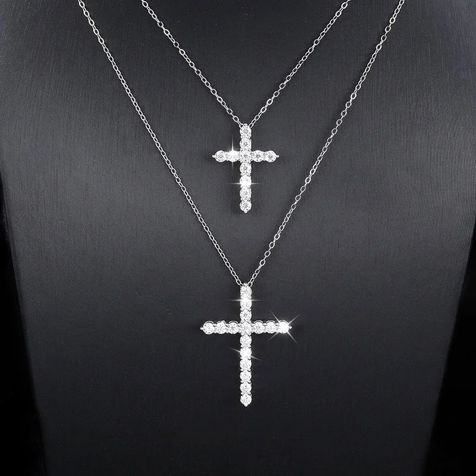
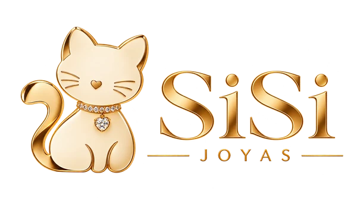
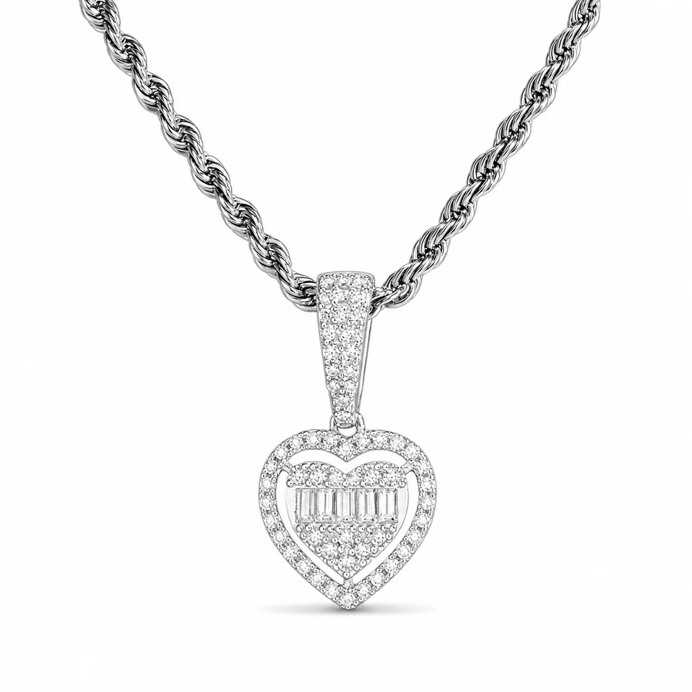
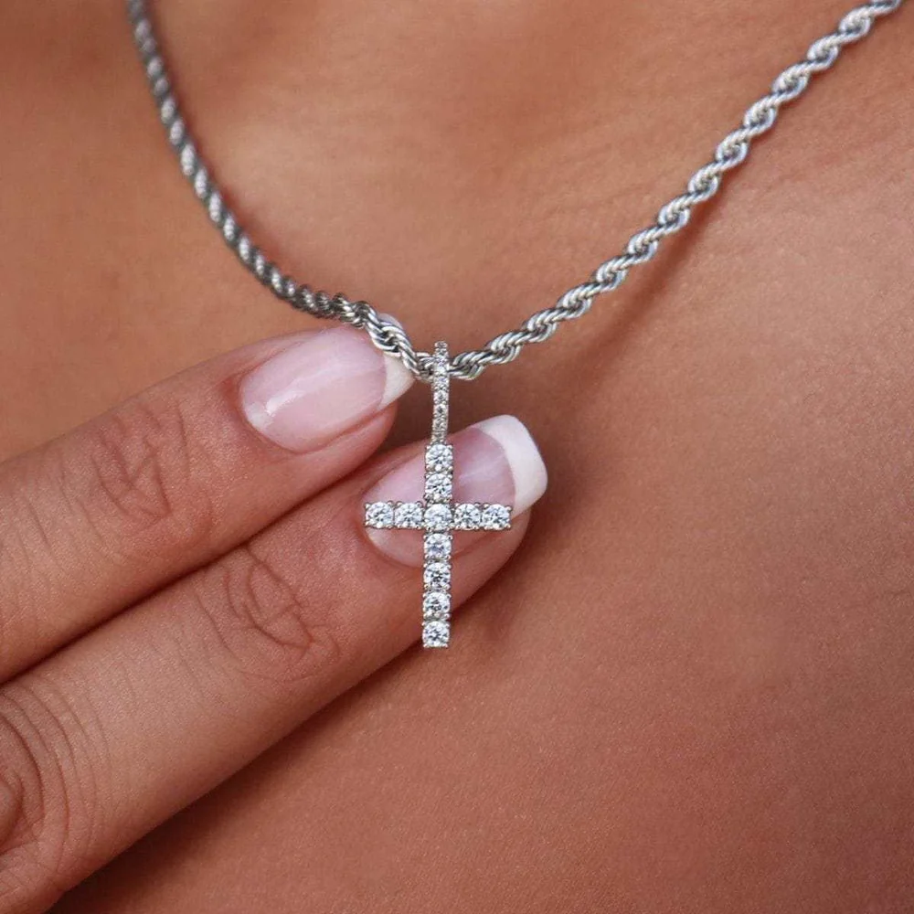
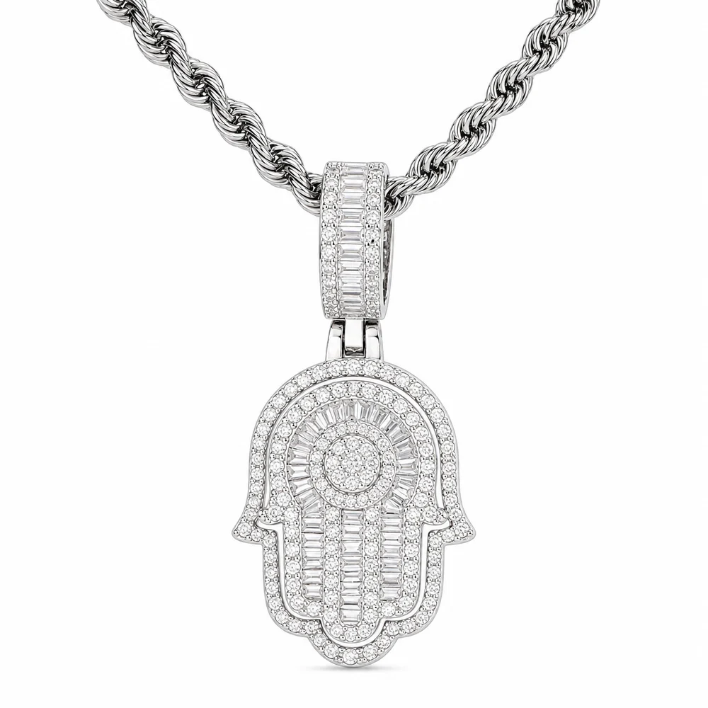
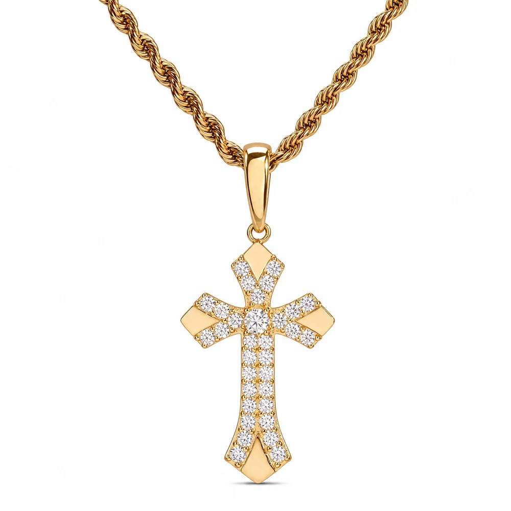
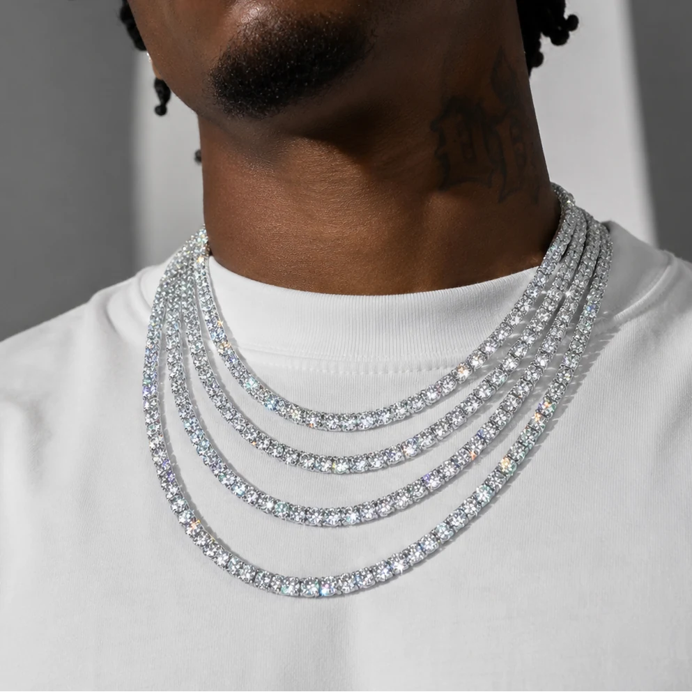

Proveedor · Miles Jewellery
Collares y colgantes
Collar con cruz de moissanita
Plata 925 · acabados plata u oro · dos tamaños.
Precio y opciones en tiendaVer en Miles

SISI / SELECCIÓN RECOMENDADA
La selección reúne cruces, corazones, Hamsa y cadenas tennis. Comprueba en cada ficha si se vende el colgante solo o con cadena, además del largo y el acabado.
Proveedor · Miles Jewellery
Consulta precio, stock, acabados y condiciones vigentes en Miles Jewellery.
Publicidad · Algunos enlaces son afiliados de Awin. Si compras a través de ellos, Sisi puede recibir una comisión sin coste adicional para ti. La compra se realiza en Miles Jewellery.

Proveedor · Miles JewelleryPlata 925 · acabados plata u oro · dos tamaños.

Proveedor · Miles JewelleryPlata 925 · varios acabados · comprueba las opciones de cadena.

Proveedor · Miles JewelleryColgante de plata 925 rodiada · cadena compatible seleccionable.

Proveedor · Miles JewelleryPlata 925 · tres acabados · la cadena no está incluida.

Proveedor · Miles JewelleryPlata 925 · acabado dorado chapado · colgante solo o con cadena compatible.

Proveedor · Miles JewelleryPlata 925 · anchos de 2–6,5 mm · largos 16–24 pulgadas · acabado dorado chapado disponible.
GUÍA PARA ELEGIR
Esta selección incluye cruces de distintos tamaños, corazones, una mano Hamsa y una cadena tennis. Algunas fichas venden el colgante sin cadena o permiten elegirla por separado. Comprueba qué incluye el precio, el largo de cadena y el tamaño del colgante; si buscas un acabado dorado, verifica que la ficha lo describa como chapado y no como oro macizo.
Guía de materiales y cuidados ↗¿Quieres comparar otras formas y categorías?
Volver a la selección completa ↗Cómo funciona la compra